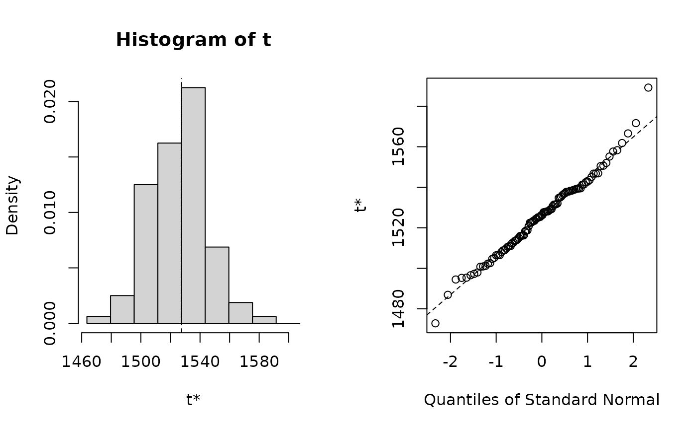

Run multilevel parametric, residual, and case bootstrap with different options
Usage
bootstrap_mer(
x,
FUN,
nsim = 1,
seed = NULL,
type = c("parametric", "residual", "residual_cgr", "residual_trans", "reb", "case"),
corrected_trans = FALSE,
lv1_resample = FALSE,
reb_scale = FALSE,
.progress = FALSE,
verbose = FALSE,
...
)Arguments
- x
A fitted
merModobject fromlmer.- FUN
A function taking a fitted
merModobject as input and returning the statistic of interest, which must be a (possibly named) numeric vector.- nsim
A positive integer telling the number of simulations, positive integer; the bootstrap \(R\).
- seed
Optional argument to
set.seed.- type
A character string indicating the type of multilevel bootstrap. Currently, possible values are
"parametric","residual","residual_cgr","residual_trans","reb", or"case".- corrected_trans
Logical indicating whether to use the correct variance-covariance matrix of the residuals. If
FALSE, use the variance of \(y\); ifTRUE, use the variance of \(y - X \hat \beta\). Only used fortype = "residual_trans".- lv1_resample
Logical indicating whether to sample with replacement the level-1 units for each level-2 cluster. Only used for
type = "case". Default isFALSE.- reb_scale
Logical indicating whether to scale the residuals for the random effect block bootstrap
- .progress
Logical indicating whether to display progress bar (using
txtProgressBar).- verbose
Logical indicating if progress should print output.
- ...
argument passed to .resid_resample.
Value
An object of S3 class "boot", compatible with boot
package's boot(). It contains the following components:
- t0
The original statistic from
FUN(x).- t
A matrix with
nsimrows containing the bootstrap distribution of the statistic.- R
The value of
nsimpassed to the function.- data
The data used in the original analysis.
- seed
The value of
.Random.seedwhenbootstrap_merstarted to work.- statistic
The function
FUNpassed tobootstrap_mer.
See the documentation in for link[boot]{boot}() for the other
components.
Details
bootstrap_mer performs different bootstrapping methods to fitted
model objects using the lme4 package. Currently, only models fitted
using lmer is supported.
References
Carpenter, J. R., Goldstein, H., & Rasbash, J. (2003). A novel bootstrap procedure for assessing the relationship between class size and achievement. Journal of the Royal Statistical Society. Series C (Applied Statistics), 52, 431–443. https://doi.org/10.1111/1467-9876.00415
Chambers, R., & Chandra, H. (2013). A random effect block bootstrap for clustered data. Journal of Computational and Graphical Statistics, 22(2), 452–470. https://doi.org/10.1080/10618600.2012.681216
Davison, A. C. and Hinkley, D. V. (1997). Bootstrap methods and their application. Cambridge, UK: Cambridge University Press.
Morris, J. S. (2002). The BLUPs are not "best" when it comes to bootstrapping. Statistics & Probability Letters, 56(4), 425–430. https://doi.org/10.1016/S0167-7152(02)00041-X
Van der Leeden, R., Meijer, E., & Busing, F. M. T. A. (2008). Resampling multilevel models. In J. de Leeuw & E. Meijer (Eds.), Handbook of multilevel Analysis (pp. 401–433). New York, NY: Springer.
Examples
library(lme4)
#> Loading required package: Matrix
fm01ML <- lmer(Yield ~ (1 | Batch), Dyestuff, REML = FALSE)
mySumm <- function(x) {
c(getME(x, "beta"), sigma(x))
}
# Covariance preserving residual bootstrap
boo01 <- bootstrap_mer(fm01ML, mySumm, type = "residual", nsim = 100)
#> 11 occurrence(s) of: message(s) : boundary (singular) fit: see help('isSingular')
# Plot bootstrap distribution of fixed effect
library(boot)
plot(boo01, index = 1)

# Get confidence interval
boot.ci(boo01, index = 2, type = c("norm", "basic", "perc"))
#> BOOTSTRAP CONFIDENCE INTERVAL CALCULATIONS
#> Based on 100 bootstrap replicates
#>
#> CALL :
#> boot.ci(boot.out = boo01, type = c("norm", "basic", "perc"),
#> index = 2)
#>
#> Intervals :
#> Level Normal Basic Percentile
#> 95% (40.55, 60.28 ) (40.15, 61.30 ) (37.72, 58.87 )
#> Calculations and Intervals on Original Scale
#> Some basic intervals may be unstable
#> Some percentile intervals may be unstable
# BCa using influence values computed from `empinf_mer`
boot.ci(boo01, index = 2, type = "bca", L = empinf_mer(fm01ML, mySumm, 2))
#> Warning: extreme order statistics used as endpoints
#> BOOTSTRAP CONFIDENCE INTERVAL CALCULATIONS
#> Based on 100 bootstrap replicates
#>
#> CALL :
#> boot.ci(boot.out = boo01, type = "bca", index = 2, L = empinf_mer(fm01ML,
#> mySumm, 2))
#>
#> Intervals :
#> Level BCa
#> 95% (41.98, 60.71 )
#> Calculations and Intervals on Original Scale
#> Warning : BCa Intervals used Extreme Quantiles
#> Some BCa intervals may be unstable